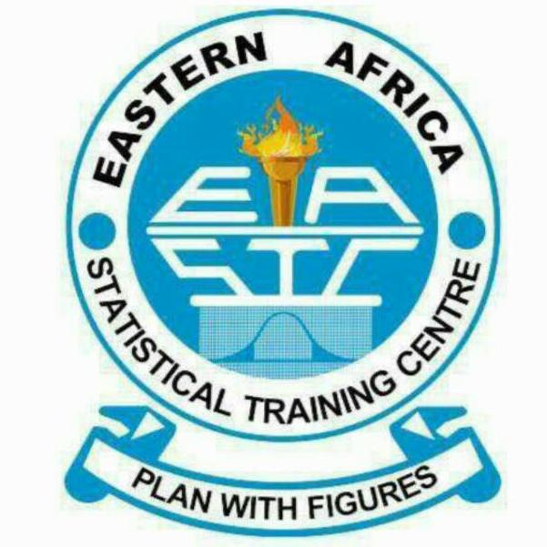

EASTC CONVOCATION CEREMONY
Plan with figures

Convocation Time Table
| Time | Event |
|---|---|
| 09:00-10:30 AM | Opening Ceremony |
| 10:30-11:30 AM | Award Distribution for students |
| 01:00-3:00 PM | Presentations of Stakeholders |
| 03:00-3:30 PM | Closing the Ceremony |
Opening of the Convocation
The convocation was officially opened by the Rector. The Rector emphasized the importance of academic excellence and the role of education in shaping the future.

Distributing Awards

Best Certificate Student: elia bakar

Best Diploma Student: majid moh'd

Best Degree Student: gift kija
PRESIDENT OF THE CONVOCATION
Name: Mrs. NYAMBILILA MINGA
Position: President of Convocation
Phone: +255652621128
E-mail: NyambiLINGA450@gmail.com
Closing the Convocation
The host of the convocation closed the ceremony by giving thanx for all people who attend in the ceremony and as a president of the convocation must close the ceremony